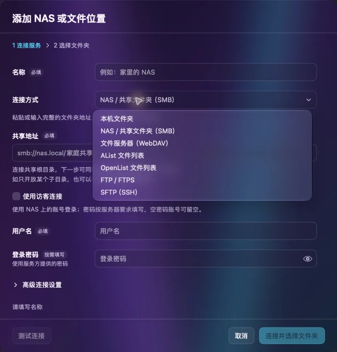
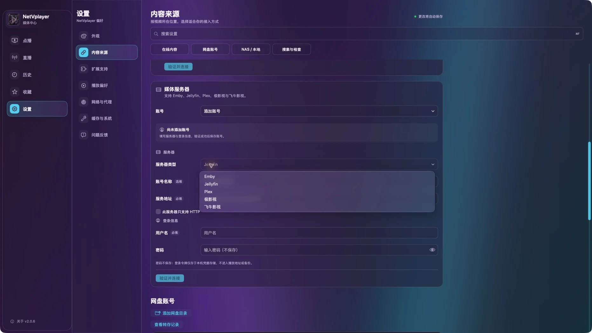
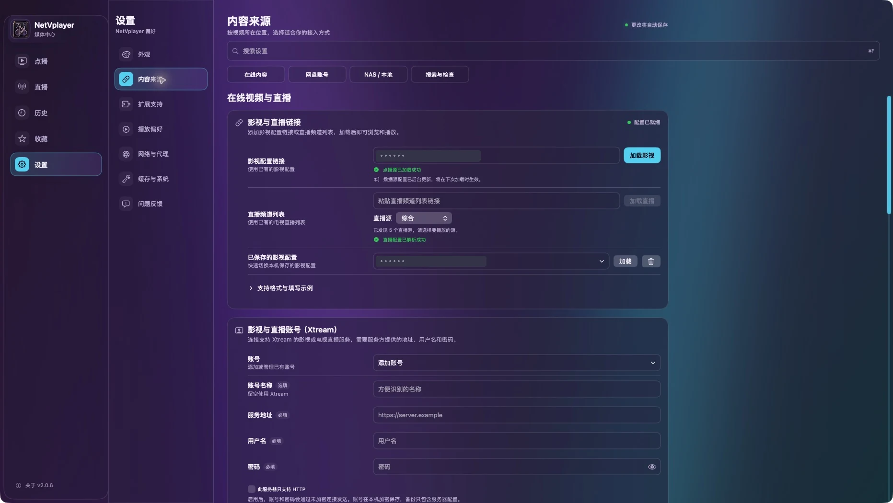
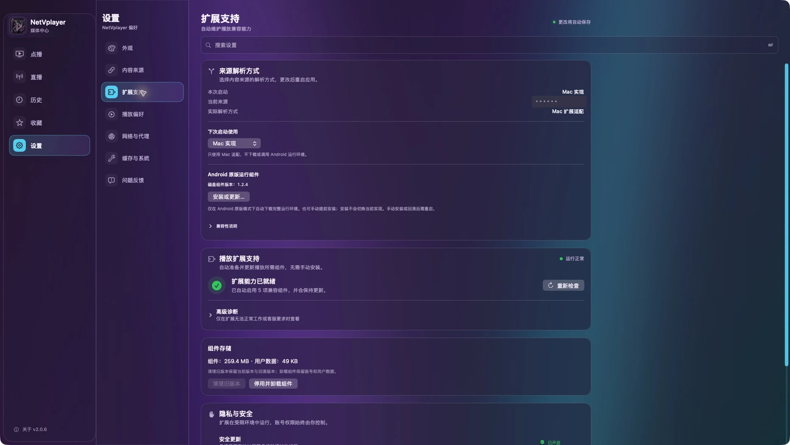

原生 macOS 媒体播放器
NetVplayer
你的内容，你的 Mac，你的播放方式
在线点播、电视直播、个人网盘与 NAS，同一套原生 Mac 体验。从浏览、选集到字幕与音画输出，让自己的内容各就其位。
稳定应用 2.0.6 · macOS 14+ · Apple Silicon

项目背景
Android 上很熟悉，
Mac 上却总差一个顺手的选择。
FongMi/TV、OK影视、影视仓、TVBox 等常用工具主要服务 Android 生态。我一直没有找到符合自己使用习惯的 macOS 版本，于是从 SwiftUI 与 libmpv 开始，写了 NetVplayer。
目标不是照搬手机或电视端界面，而是把内容浏览、搜索、选集、点播、直播和自有媒体库组织成一套原生 Mac 桌面体验。
NetVplayer 不是上述项目的官方 Mac 版，与它们不存在隶属或官方合作关系。项目感谢 FongMi/TV 等开源实践提供的兼容性参考，并保持独立的 Swift/macOS 实现。
- 原生界面
- SwiftUI
- 播放核心
- libmpv
- 项目形态
- MIT 开源
完整观看体验
从发现，到播放，再到直播。
跨来源搜索、多线路选集、直播频道与历史续播使用原生 macOS 交互。内嵌 libmpv，字幕、音轨、倍速、章节和小窗都在手边。

- 详情与选集线路、资源组、宫格／列表与排序集中呈现；目录提供时显示文件大小。
- 点播与直播字幕音轨、片头片尾、小窗置顶，以及频道分组、搜索与节目单。
- 跨来源搜索搜索你已配置的来源，支持网盘分享入口；搜索范围可在设置调整。
字幕看清，对白听清。文本字幕可本机翻译并导出双语版本，也提供图片字幕／音频识别与在线搜索入口。对白清晰度可选轻度、中度或较强，按需恢复原音频。
输出状态，看实际结果。选择跟随系统、临时 HDR 或 SDR 映射，并调整音频设备。Apple 本机翻译需要 macOS 15+ 与可用语言资源；HDR、音频和识别功能取决于素材、设备与系统能力。
查看音画与字幕用法你的媒体空间
网盘、NAS 与本机文件，
都能成为自己的媒体库。
文件夹可以直接浏览，也可以整理成电影、剧集或混合海报墙。优先读取本地资料，再按需补充 TMDB、豆瓣与手动匹配结果。
- 个人网盘目录夸克、UC、阿里云盘、百度网盘、115；支持多选文件夹。
- NAS 与文件服务SMB、WebDAV、AList、OpenList、FTP／FTPS、SFTP 与本机文件夹。
- 媒体服务器Emby、Jellyfin、Plex、极影视与飞牛影视，使用已有服务端媒体库。
个人网盘
自己的文件夹，
直接加入媒体库。
在“设置 → 内容来源 → 网盘账号”登录，再点击“添加网盘目录”，选择服务和文件夹。
个人目录与来源分享播放分别管理。Android 原版的账号在来源内授权，与这里的原生账号独立保存。

NAS 与本地
连接一次，
文件夹分别管理。
在“内容来源 → NAS / 本地”添加连接。测试通过后，同时选择电影、剧集等目录，按自己的习惯整理。
可为媒体库选择本地资料或在线元数据。正式应用提供 TMDB 项目凭据，普通用户无需填写令牌。

媒体服务器
已有媒体库，
换一种 Mac 打开方式。
选择服务器类型，填写自己的地址与登录信息，验证并连接后，从首页选择服务浏览与播放。
不同于文件服务，媒体服务器提供自己的目录与影片资料。真实账号、不同 NAS 和长期播放的兼容范围仍以实际服务为准。
内容与权限由你管理，应用不内置媒体源。查看完整接入指南与使用条件。
个性化主题
多种外观，同一套原生体验。
从明亮通透到沉浸深色，14 种主题统一覆盖背景、侧栏、控件与强调色，选择会自动保存。
安装与用法
从下载，到第一次看到内容。
适用于 macOS 14+ 和 Apple Silicon。安装应用、准备所需扩展，再添加自己的内容入口。
- 系统
- macOS 14+
- 芯片
- Apple Silicon
- 当前版本
- 2.0.6
-
01
下载 arm64 安装包
从项目官网或最新 Release 下载名称中包含
macos-arm64.zip的文件。 -
02
解压并移入“应用程序”
双击 ZIP，得到
NetVplayer.app，再拖入 macOS“应用程序”文件夹。 -
03
按系统提示完成首次打开
当前社区包使用 ad-hoc 签名。被拦截时，核对下载来源，再到“系统设置 → 隐私与安全性”选择“仍要打开”；系统允许时也可在 Finder 右键“打开”。
首次准备
扩展自动维护，首次需要连接 GitHub。
在“设置 → 扩展支持”等待就绪，失败时选择“重新检查”。有效的本机组件先恢复，在线更新在后台进行。Mac 与 Android 的选择方式见下方架构介绍。

内容来源
自己的配置，在这里填写。
扩展就绪后，打开左侧“设置”，选择“内容来源”，再点击上方“在线内容”定位到影视与直播链接。
在“影视配置链接”中粘贴自己有权使用的配置，点击“加载影视”。直播列表填写在“直播频道列表”，再点击“加载直播”。
加载成功后返回首页浏览和播放。网盘登录位于“网盘账号”，文件连接位于“NAS / 本地”；媒体服务器与 Xtream 账号在“在线内容”页面下方。
新版架构
两种来源解析方式，
同一套原生播放体验。
Mac 实现与 Android 原版独立运行。由你选择内容如何解析，SwiftUI 负责界面，libmpv 负责实际播放；主程序、扩展与签名分发分别维护。

按需选择
Mac 适配，
或 Android 原版组件。
Mac 实现使用原生适配或签名扩展，不准备 Android 环境。
Android 原版在独立兼容环境执行用户配置引用的原始 JAR。首次从 GitHub 下载并验证完整签名环境，客户端无需分别组装依赖。
更改后重启，两者不自动互相回退。本机文件、媒体服务器和标准接口不受此设置影响，应用界面与媒体播放始终为原生 Mac。
- 01你的内容
配置、网盘、NAS
媒体服务器与文件 - 02按选择解析
Mac / Android 原版
或标准服务接口 - 03统一播放输入
媒体地址、字幕
格式与必要请求信息 - 04原生播放
libmpv + Mac 窗口
音画与字幕控制
- 公开主程序与 SDK原生界面、播放器和通用集成能力。
- 独立内容扩展站点业务 Provider 保持私有，按兼容性独立更新。
- 签名分发索引、包摘要与资产校验后激活，保留可用版本。
阅读完整架构 · Provider SDK · 扩展与完整环境发布
通用 Android Java／JNI 兼容层与构建源码随完整环境附件公开；站点业务实现、账号和私钥不属于公开源码。
常见问题
安装前后，常见问题一次说明。
系统要求、内容接入、两种解析方式与常用设置。更多操作步骤见图文指南。
Mac 实现和 Android 原版如何选择？
在“设置 → 扩展支持 → 来源解析方式”选择并重启。Mac 模式使用原生适配或签名扩展；Android 模式执行自己配置引用的原始 JAR，首次准备完整签名环境。两者独立运行，不自动互相回退。
只看 NAS、网盘目录或本机视频，需要影视配置吗？
不需要。可以直接添加个人网盘目录、NAS／文件连接或媒体服务器；单个本机视频可通过“文件 → 打开文件”或拖入应用打开。
字幕翻译和 HDR 有什么使用条件？
Apple 本机字幕翻译需要 macOS 15+ 和可用语言资源。HDR、杜比视界和音频实际输出依赖素材、系统和设备，以实际输出状态为准；图片字幕／音频识别也有各自的权限与资源要求。
支持 Intel Mac 吗？
当前不支持。公开版本只提供 Apple Silicon arm64 构建，需要 Apple M 系列芯片。
为什么第一次打开会被 macOS 拦截？
当前版本使用社区 ad-hoc 签名，没有使用 Apple Developer ID 公证。请确认应用名称和下载来源，再通过 Finder 右键“打开”或“隐私与安全性”完成首次放行。
软件自带视频源或直播列表吗？
不自带。公开应用不内置、不提供也不托管视频源、直播列表、账号或媒体内容。
配置地址从哪里获得？
请使用你自己维护、购买或明确获得授权的内容服务。项目不提供、推荐或代找视频源地址。
播放扩展需要手动安装吗？
正常情况下不需要。首次准备或后续更新时，网络必须能连接 GitHub，否则下载与更新无法完成。已经安装并验证通过的组件在离线时仍可继续使用；状态异常时可在“设置 → 扩展支持”中选择“重新检查”。
配置和授权凭据保存在哪里？
配置与授权凭据只保存在本机。非敏感备份不会包含云盘 Token、Cookie 等授权信息。
这是 FongMi、影视仓或 TVBox 的官方 Mac 版吗？
不是。NetVplayer 是独立的 Swift/macOS 实现，与这些项目不存在隶属或官方合作关系。
如何更新应用？
侧栏和设置页的版本号旁会提示新版。点击版本号并确认“更新”，应用会在后台下载和校验，正常退出后安装；也可从官网手动下载最新版。
可以关闭自动诊断吗？
可以。在“设置 → 问题反馈 → 自动诊断”中关闭。正式版默认发送经过隐私过滤的崩溃堆栈、版本、固定数字错误维度和有限恢复步骤，并对起播耗时进行 5% 采样；可恢复故障不会单独创建问题。账号凭据、媒体名称、播放地址、原始错误正文和完整日志都不会发送。
遇到问题如何反馈？
可以使用应用内“问题反馈”生成脱敏信息并描述复现步骤。不要公开账号、Token、Cookie 或完整配置地址。
开放构建
看得见的代码，参与得了的未来。
NetVplayer 主程序与 Provider SDK 以 MIT License 开源，使用 SwiftUI 与内嵌 libmpv。站点业务 Provider 保持私有；通用 Android 兼容与构建源码随完整环境附件公开。你可以阅读架构、提交问题或贡献代码。
- 界面
- SwiftUI
- 播放核心
- libmpv
- 系统要求
- macOS 14+ · Apple Silicon
- 公开源码
- 主程序 · Provider SDK
- 许可证
- MIT License